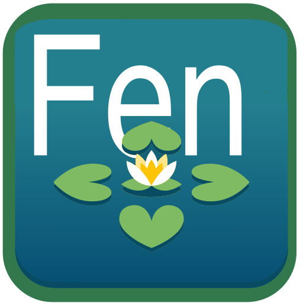
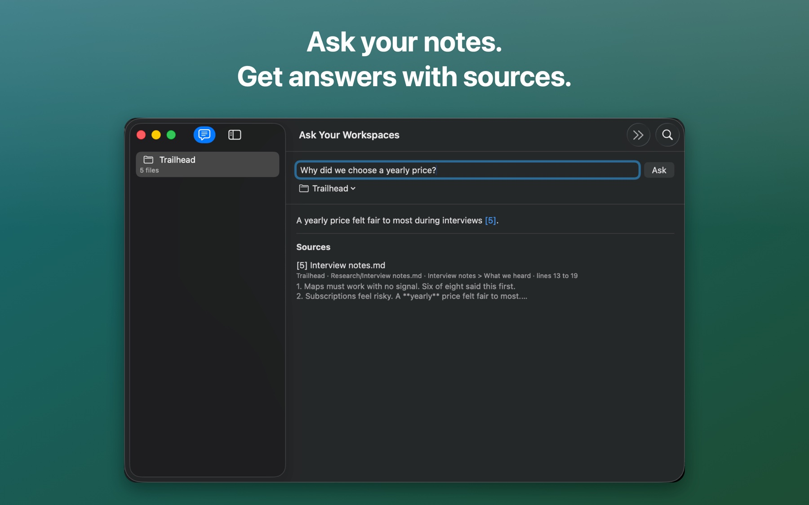
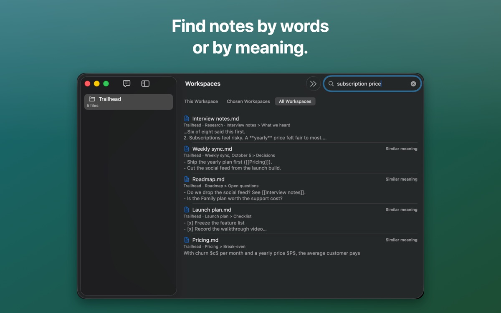
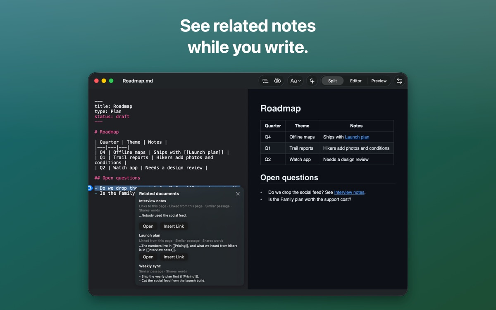
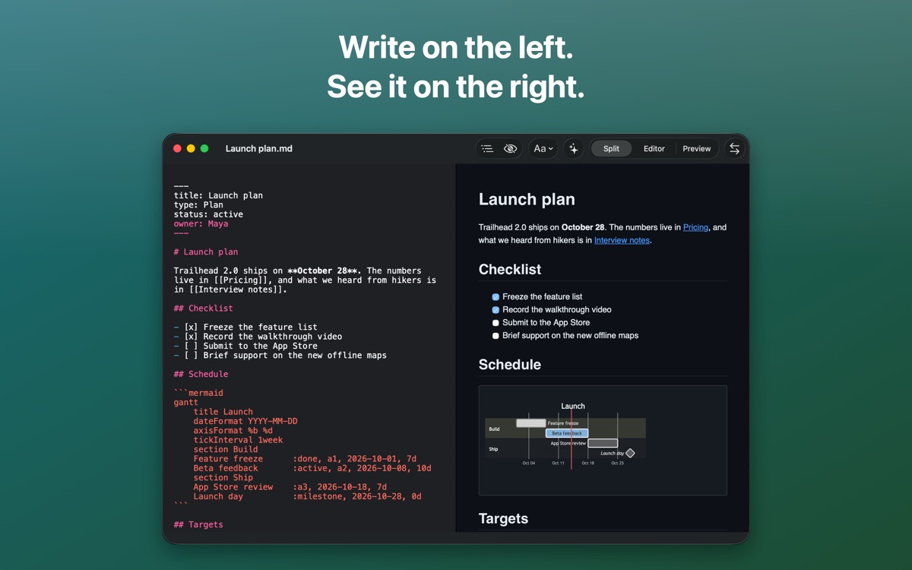
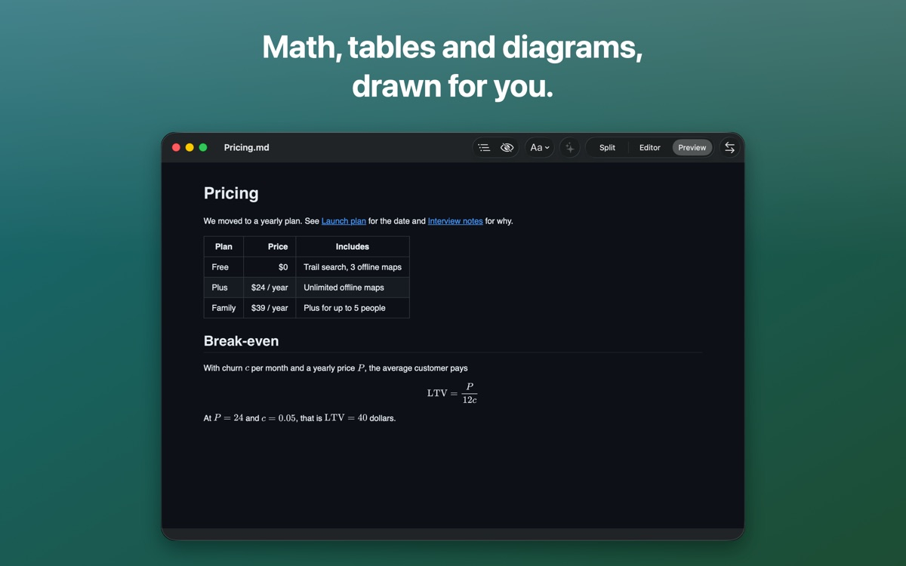

FenFen is a native Markdown editor for Mac, iPhone and iPad that turns your folders into a knowledge base. Ask a question and get an answer with numbered sources. Search by meaning, on your device. Add the AI you trust, and every AI edit goes through one gate you can undo. Your notes stay plain .md files. Free and open source.
Signed and notarized by Apple, so it opens without Gatekeeper warnings. Needs macOS 15 or later (iOS 18 or later on iPhone and iPad).

A fen is a wetland that feeds itself. Your notes can work the same way: connected, searchable and always growing, while they stay plain files.
Ask a question across one workspace or all of them. The answer cites numbered sources with line numbers, so you can check it. A statement with no source gets a warning. Ask only reads. It never edits.
An on-device index finds notes by exact words and by meaning, across one workspace or all of them. Nothing leaves your Mac. The meaning side works for English.
A card shows the notes that link here, the ones you link to, and passages that say something similar. Open one, or insert a link in a click.
Fen sends no AI request until you add a provider: Apple's on-device model, Ollama, or any OpenAI-compatible service. Each workspace sets what AI may see. Ask AI, Enrich and agents all change a note through one gate. You start it, you see the change, and Undo reverts it.
An optional MCP server listens on 127.0.0.1 only and is off by default. Each client gets its own token and its own workspaces. An agent commits to its own branch and your checkout stays put.
Add as many folders as you like, with or without git. Fen lists their notes without opening each one, and writes nothing into your folders apart from an optional schema file.
Link notes with [[name]], [[name|text]] or [[name#heading]]. A backlinks list shows the notes that link here, even ones you have not opened.
GitHub-Flavored Markdown, syntax highlighting, MathJax and Mermaid render as you type. An optional Live Preview mode (Experimental) styles the source in place.
Define types and fields in a plain schema.yaml. Edit typed properties in the app. Hints flag a near-miss, and they never block a save.
Clone a repository as a workspace, then pull and push with a token limited to that repository, kept in the Keychain. On iPhone, Fen copies the repository through the GitHub API. Conflicts wait for your choice.
See the earlier versions the system keeps for a note. On iCloud, your other devices' recent versions show up too. We measured this between a Mac and an iPhone.
The same editor with keyboard shortcuts, a share sheet in and out, and one pane at a time on a narrow screen.
Pure Swift and SwiftUI on Apple Silicon. MIT license, no account, no telemetry. Every script ships inside the app.




Most tools make you pick between files you own and AI that helps. Fen keeps both.
| Fen | Obsidian | Notion | Bear | iA Writer | |
|---|---|---|---|---|---|
Notes are plain .md files in your folders | Yes | Yes | No, a cloud workspace | No, a database | Yes |
| Apps for Mac, iPhone and iPad | Yes, native Swift | Yes, Electron on desktop | Yes | Yes | Yes |
| Search by meaning, on your device | Yes (English) | Plugins only | Yes, in the cloud | Not found | No, words only |
| Answers cite their sources | Yes, with line numbers | Not in the core app | Yes | No built-in AI | No built-in AI |
| Choose your own AI | Yes: on-device, Ollama or any compatible endpoint | Through plugins | No, Notion picks the model | Bring your own assistant over MCP | No AI features |
| Approval and Undo for AI edits | Yes, one gate for all of them | Not in the core app | Accept or discard, version history | Depends on your assistant | No AI edits |
| MCP server for agents | Yes (Mac), each agent on its own git branch | Community servers | Yes | Yes (Mac) | Not found |
| No account needed | Yes, and no telemetry | Yes, and no telemetry | Account needed | Yes | Not verified |
| Price | Free, MIT license | Free, even for work. Sync from $4 a month | Free plan. AI from $20 a member a month | Free. Pro $2.99 a month | $49.99 once on Mac |
Checked against each tool's official pages on 15 October 2026. Tools change, so check theirs before you decide. Found a mistake? Tell us and we'll fix it.
What the others do better. Obsidian has plugins, a graph view, Canvas and encrypted Sync. Notion has real-time collaboration, databases and connectors. Bear is polished, with tags and an Apple Watch app. iA Writer marks which text you wrote and which an AI wrote, and it runs on Windows and Android too. Fen has no plugins or real-time collaboration, and runs on Apple platforms only.
Get Fen.app.zip from the latest release, unzip it, and drag Fen to Applications. Choose Fen > Check for Updates… to update.
Install and upgrade with a tap.
brew tap zoharbabin/fen https://github.com/zoharbabin/fen
brew install --cask fenFen is in App Review. One App Store listing will cover Mac, iPhone and iPad. Until it is out, use the Mac download above.
Clone the repository and run swift build. The README has the steps.
A snapshot of the full roadmap. Missing something? Propose a feature or share an idea in the issues.
Fen is a small, focused project and issues, bug reports, and pull requests are all welcome.